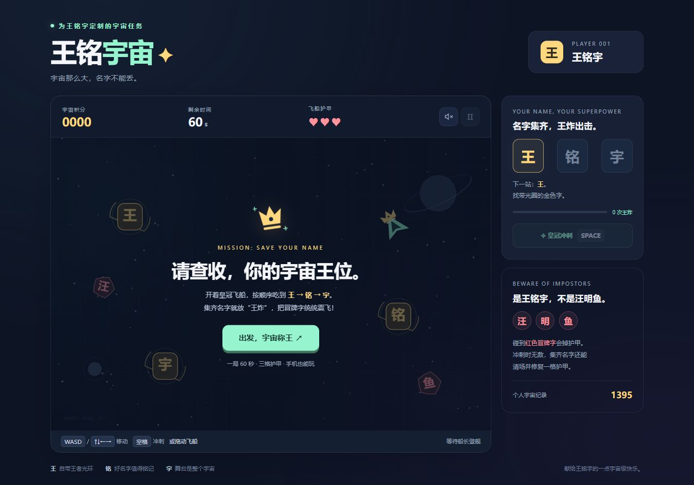
进入宇宙 ↗01
王铭宇的王铭宇宙
宇宙那么大，名字不能丢。驾驶皇冠飞船，按顺序找回“王、铭、宇”，集齐名字就来一场王炸。
点开封面，就能开始玩。

进入宇宙 ↗宇宙那么大，名字不能丢。驾驶皇冠飞船，按顺序找回“王、铭、宇”，集齐名字就来一场王炸。
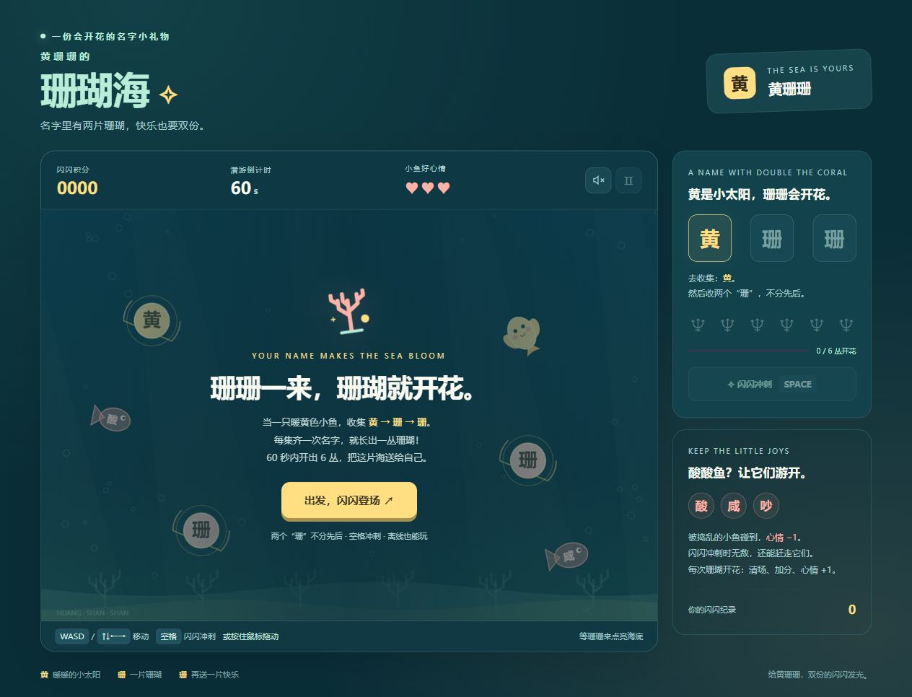
潜入珊瑚海 ↗把名字藏进海底，把快乐种成珊瑚。在柔软的海水里找回“黄、珊、珊”，让一座小花园慢慢亮起来。
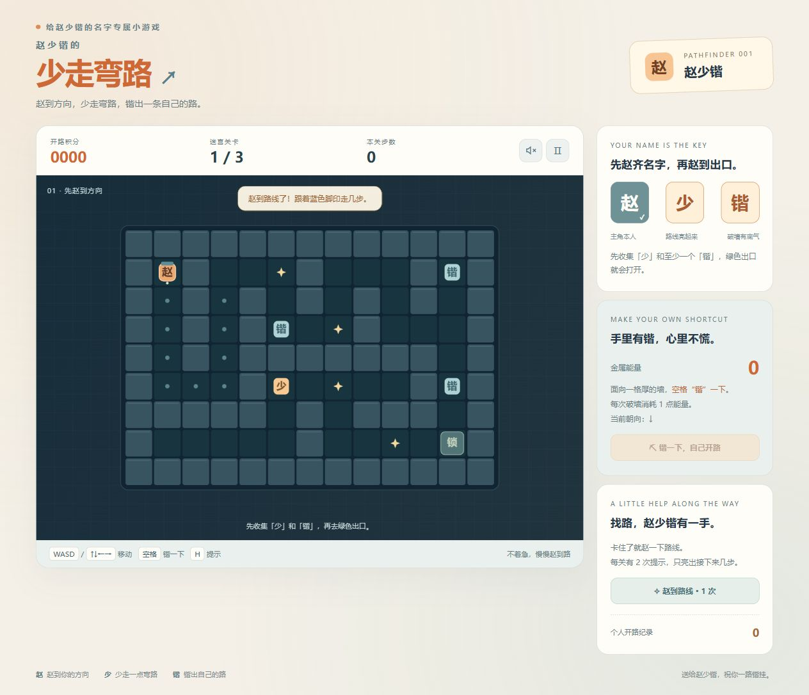
走进迷宫 ↗给“少”一个小小的祝愿：少走弯路，多点快乐。走过三段迷宫，用自己的节奏找到出口。
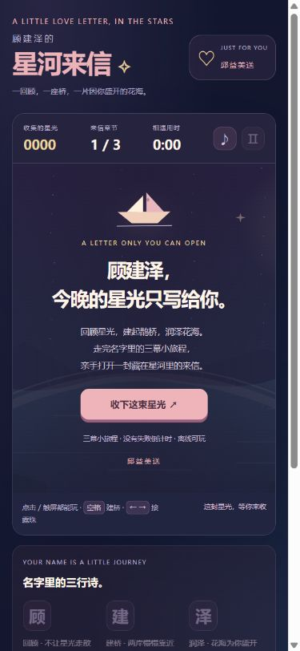
收下星河来信 ↗回顾星光，建起鹊桥，润泽花海。完成三幕旅程，打开来信、相册与吉他谱，把心意留在下一页。
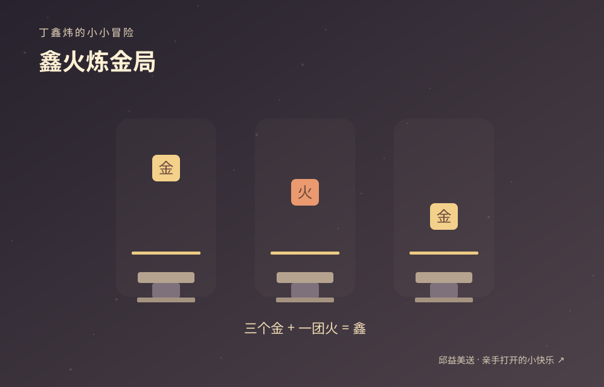
打开小小冒险 ↗丁丁当当敲矿石，三个金攒成“鑫”，一点火点亮“炜”。按准时机，开一家闪闪发光的小工坊。
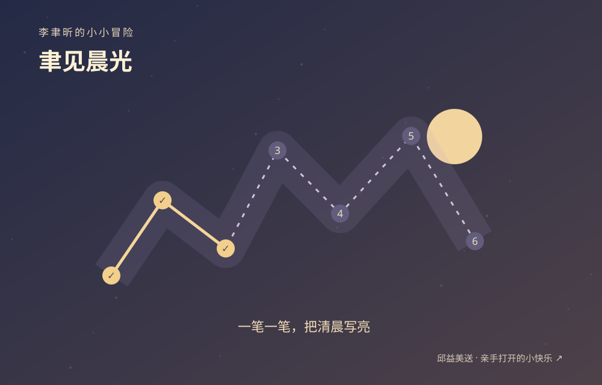
打开小小冒险 ↗把“聿”变成小笔，把“昕”变成晨光。沿着光点一笔一笔走，点亮三幅属于李聿昕的清晨。
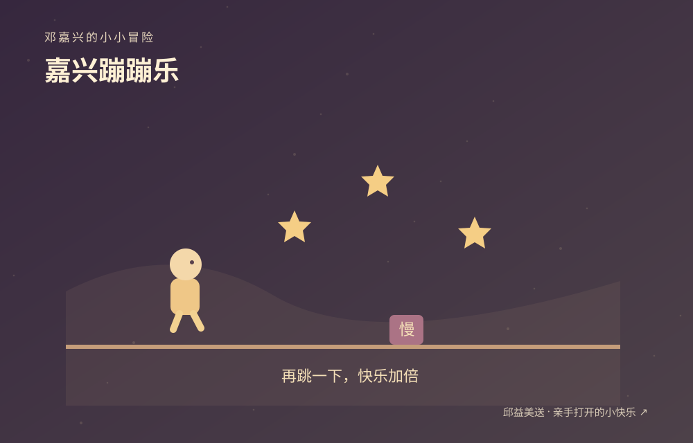
打开小小冒险 ↗嘉奖每一次起跳，让开心正在发生。用二段跳越过路障，接住嘉奖星，把“嘉兴”蹦成小礼花。
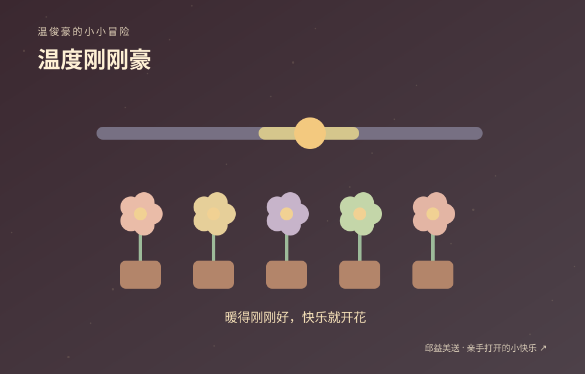
打开小小冒险 ↗给“温”调一个刚刚好的温度。风会添一点乱，稳住小太阳，让好运“豪”不客气地开出五朵花。
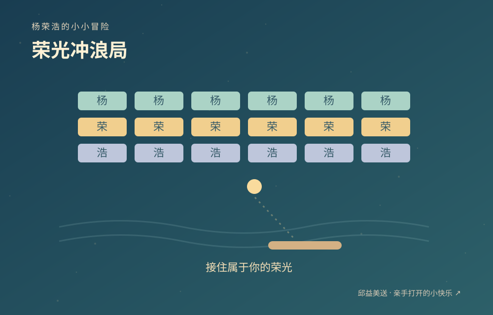
打开小小冒险 ↗在“浩”浩海面上移动浪板，把光球弹向“荣”光。接稳每次落点，点亮十八片小小的荣光。
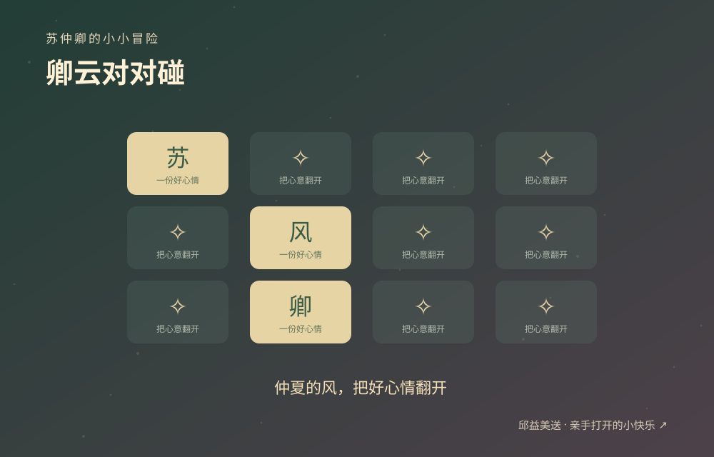
打开小小冒险 ↗让快乐“苏”醒，收一缕“仲”夏晚风，把好心情留给“卿”。翻开十二张卡，找到六对心意。
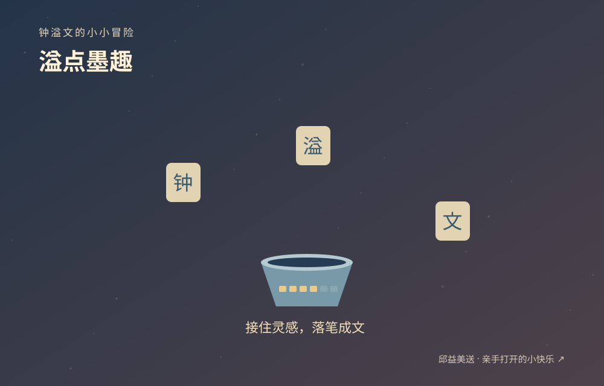
打开小小冒险 ↗钟意灵感，让快乐溢成文字。移动墨盏，依次接住“钟、溢、文”，落笔写一张自己的小诗笺。
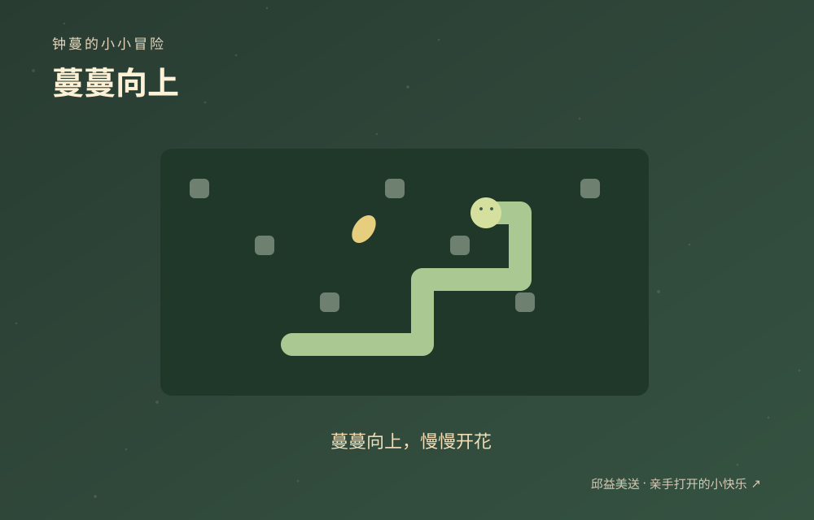
打开小小冒险 ↗让“蔓”变成一条会长大的小藤蔓。绕开石头，收集新叶，蔓蔓向上，慢慢开出一朵自己的花。
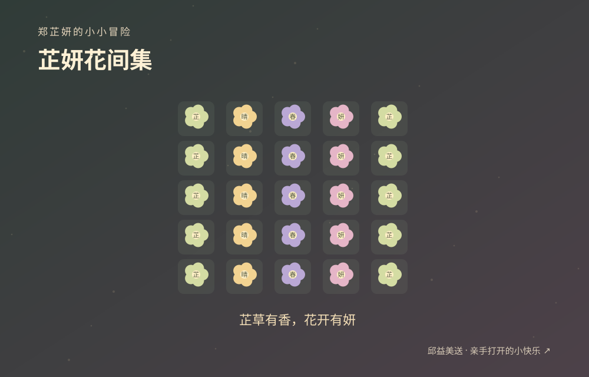
打开小小冒险 ↗把“芷”的清香和“妍”的花开，种成一片小花田。连起相邻同色花，三朵成束，把每一点快乐郑重收好。
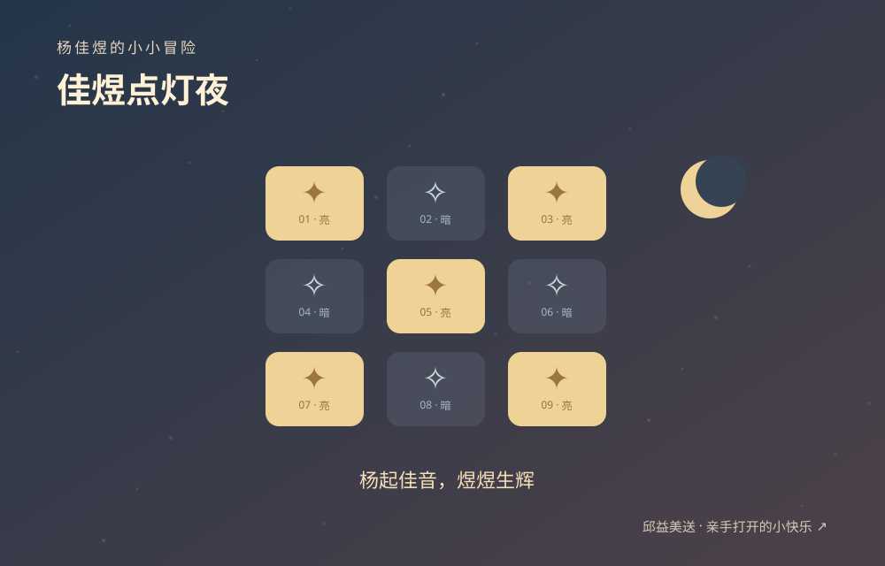
打开小小冒险 ↗把“佳音”藏进星灯，把“煜”变成自己的光。拨动一盏，邻灯也跟着变；解开三幕灯阵，让夜色煜煜生辉。
这些小游戏，从名字出发，也从对一个人的在意出发。我希望收到它的人，既能玩上一会儿，也能感受到这份小礼物里的心意。
每个作品都有自己的颜色和玩法。喜欢热闹，就飞向宇宙；想慢一点，就让星河陪着你。
十四款游戏都提供免安装的文件版，下载后用浏览器打开即可。除星河来信外，游戏都带当前浏览器内的排行榜；不同设备不互通。星河来信的公开演示使用插画相册，完整礼物版另行保存。
邱益美 · 把小小心意，留在作品里。